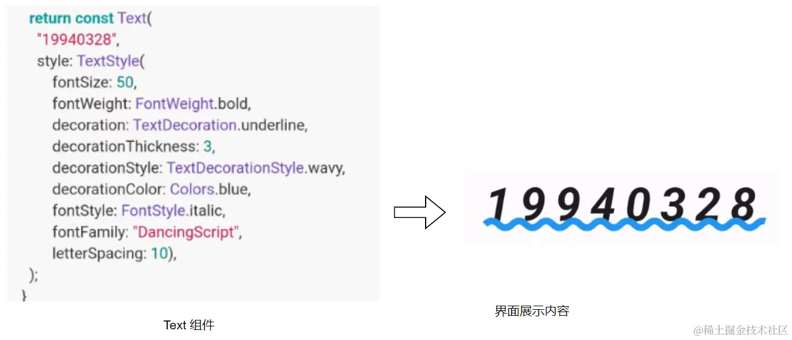

- 01 前言-教程内容导读.md.html
- 02 Flutter 开发环境的搭建.md.html
- 03 新手村基础 Dart 语法 (上).md.html
- 04 新手村基础 Dart 语法 (下).md.html
- 05 Flutter 计数器项目解读.md.html
- 06 猜数字界面交互与需求分析.md.html
- 07 使用组件构建静态界面.md.html
- 08 状态数据与界面更新.md.html
- 09 校验结果与提示信息.md.html
- 10 动画使用与状态周期.md.html
- 11 猜数字整理与总结.md.html
- 12 电子木鱼界面交互与需求分析.md.html
- 13 电子木鱼静态界面构建.md.html
- 14 计数变化与音效播放.md.html
- 15 弹出选项与切换状态.md.html
- 16 用滑动列表展示记录.md.html
- 17 电子木鱼整理与总结.md.html
- 18 白板绘制界面交互与需求分析.md.html
- 19 认识自定义绘制组件.md.html
- 20 通过手势在白板上绘制.md.html
- 21 白板画笔的参数设置.md.html
- 22 撤销功能与画板优化.md.html
- 23 应用界面整合.md.html
- 24 数据的持久化存储.md.html
- 25 网络数据的访问.md.html
- 26 教程总结与展望.md.html
- 捐赠
11 猜数字整理与总结
通过上面 5 章的学习，我们已经完成了一个简单的猜数字小项目。这里将对项目在的一些知识点进行整理和总结，主要从界面相关知识和获得的技能点两个方面进行总结：
一、 界面相关的知识
对于新手来说，Flutter 框架最最重要的就是完成界面在设备屏幕上的展示；并让用户在交互过程中展示准确的界面信息，以完成项目的功能需求。 从计数器和猜数字两个小项目中不难发现，组件 Widget 和界面呈现息息相关。
1.组件与界面的关系
现实中的一处建筑，在地图上可以用经纬度信息进行表示；界面的呈现效果，也可以用组件的信息进行表示。通过一个东西，可以确定另一个东西，这是一种非常典型的 映射关系 。组件对象可以决定界面上的展示内容，组件在构建过程中的配置参数，就是用于控制界面呈现效果的。
所以，组件(Widget) 本质上是对界面呈现的一种配置信息描述。

2.界面构建逻辑的封装
世界会分为很多国家、国家会分为很多省、省会分成很多市、市会分成很多县、区…等等。这是一个非常典型的 树形嵌套结构 ，对于管理来说，这种结构是不可或缺却的，比如一个公司的组织架构、一本书的目录结构。
当个体数量非常庞大，需要进行维护管理时，树形嵌套结构 可以很有效地将整体划分为若干层级。从而各司其职，完成整体的有序运转，社会是如此，对于界面来说也是一样。对于可交互软件的开发者而言，设备的界面就是一个世界，包含着各种各样的视觉元素，用户在使用软件交互过程中的正确性，就是世界的有序运转。
只靠一个人管理整个社会，其他全部躺平是不现实的; 同样只靠一个组件来维护界面也不是明智之举。组件可以表示界面上的一部分，合理地划分 "屏幕世界" 的区域，交由不同的组件进行管理，是一个好的习惯。这得益于组件可以对界面构建逻辑的进行封装。
3.状态数据与界面更新
Widget 对象的所有属性都需要是 final 修饰的，也就是说你无法修改 Widget 对象的属性。前面说过 Widget 可以决定界面的呈现效果，也就是说对于一个 Widget 对象 而言，它对应的界面效果是无法变化的。但界面在交互过程中，一定会有界面变化的需求，比如说计数器项目，点击按钮时文字发生变化。
可能会有人疑惑，既然你说 Widget 对象无法修改属性，那计数器的数字为什么会变化。理解这个问题是非常重要的，所以先举个小例子：
现实生活中，一只狗自诞生那一刻，毛色属性就无法修改。 有一天，你去小明家，站在一只白狗面前。 小明对你说: “你把眼睛闭上。” 过一会你睁开眼，看到面前有一只黑狗。 那么，你是否会惊奇的认为，自己的闭眼操作会改变一只狗的毛色。 (其实只是小明换了一只体型一样的黑狗)
同理，计数器项目中，你点击按钮时，数字从 0 -> 1。并不是 Text("0") 的文字属性变成了 1，而是你面前的是一个新的 Text("1") 对象。数字需要在交互时发送变化，但不能再 Widget 类中变化，所以 Flutter 框架中，提供了一个状态数据维护的场所： State 的衍生类。它可以提供 setState触发重新构建，从而更新界面呈现。
4.组件有无状态的差异性
对于新手而言，自己创建 Widget 的派生类，有两个选择。其一是继承自 StatelessWidget ， 其二是继承自 StatefulWidget， 两者都可以通过已有的组件完成拼装的构建逻辑。
StatelessWidget 派生类是很简单直接的，它在 build 方法中通过已有组件来完成构建逻辑，返回 Widget 对象。 界面上需要什么，就在构造函数中传什么。相当于一个胶水，把其他组件黏在一块，作为新的组件个体。
StatefulWidget 和 StatelessWidget 在功能上是类似的，只不过 StatefulWidget 自己不承担 build 组件的责任，将构建任务委托给 State 派生类。它会通过 createState 方法创建 State 对象：
在上一点中提到，State 派生类中可以维护状态数据的变化和重新触发自己的 build 构建方法，实现界面的更新。另外，State 对象有生命周期回调，可以通过覆写方法进行感知。
需要注意一点: 不要将 StatefulWidget 和 State 混为一谈，两者是不同的两个类型。可以感知生命周期、维护状态数据变化的是 State 类。 StatefulWidget 的任务是承载配置信息，和创建 State 对象。
二、 技能点
虽然说界面上展示的内容都是通过 Widget 确定的，但 Flutter 中除了 Widget 还有很多其他的类型对象。它们在一起共同工作，维护界面世界的运转。
1. 回调函数的使用
函数本身可以视为一个对象，作为函数的参数进行传递，这样可以在一个类中，很方便地感知另一个对象事件的触发。比如在 _GuessPageState 类中，使用 FloatingActionButton 组件，它的入参 onPressed 是一个函数，这个函数是由框架内部在恰当的时机触发的，这个时机就是点击。
也就是说，点击会触发 onPressed 参数传入的函数对象，这样我们就可以方便地 监听到 事件，并处理数据变化的逻辑。这种函数，就称之为 回调函数 。既然函数要作为对象传递，那最好要有类型名，可以通过 typedef 让函数有用类名：
比如， FloatingActionButton 的 onPressed 参数类型是 VoidCallback ，定义如下：表示一个无参的返回值为空的函数。
typedef VoidCallback = void Function();
AnimatedBuilder 组件的 builder 参数也是一个回调函数，类型为 TransitionBuilder ，定义如下：表示一个返回值为 Widget, 两个入参分别是 BuildContext 和 Widget? 的函数。
typedef TransitionBuilder = Widget Function(BuildContext context, Widget? child);
2. 动画控制器的使用
动画控制器是界面可以进行动画变化的驱动力，使用过程分为三步: 创建动画控制器、 在合适时机启动控制器、使用动画器的值构建界面
1.创建动画控制器主要在 State 派生类中进行：让 State 派生类混入 SingleTickerProviderStateMixin 后，将状态自身作为 AnimationController 的 vsync 入参：
class _GuessPageState extends State<GuessPage> with SingleTickerProviderStateMixin{
late AnimationController controller;
@override
void initState() {
super.initState();
controller = AnimationController(
vsync: this,
duration: const Duration(milliseconds: 200),
);
}
2.在恰当的时机可以通过 AnimationController 的 forward 方法启动控制器。让它的值从 0 变化到 1 ：
controller.forward(from: 0);
3.根据动画控制器的值，设置需要动画变化的属性。由于动画的触发非常频繁，推荐使用 AnimatedBuilder 监听控制器，实现局部组件的更新和构建：
3. 随机数的使用
Dart 内部提供了 Random 类，因此获取随机数就非常方便。只要创建 Random 对象，提供 nextInt 就可以得到 0 ~ 100 的随机整数 (不包括 100) ：
Random _random = Random();
_random.nextInt(100);
另外，可以通过 nextDouble 方法获取 0 ~ 1 的随机小浮点数 (不包括 1) ；通过 nextBool 方法获取随机的 bool 值：
三、接触的内置组件
最后来整理一下目前猜数字项目中用到的 Flutter 内置组件，大家可以根据下表，结合源码以及应用界面，思考一下这些组件的作用和使用方式：
1. 基础组件
基础组件是常用的简单组件，功能单一，相当于积木的最小单元：
| 组件名称 | 功能 | 猜数字中的使用 |
|---|---|---|
| Text | 文本展示 | 展示相关的文字信息 |
| TextField | 输入框展示 | 头部的输入框，得到用户输入 |
| Container | 一个容器 | 对比较结果界面进行着色 |
| Icon | 图标展示 | 作为图标按钮的内容 |
| IconButton | 图标按钮，通过 onPressed 监听点击回调 | 头部运行按钮， |
| FloatingActionButton | 浮动按钮 ，通过 onPressed 监听点击回调 | 右下角按钮，生成随机数 |
2. 组合结构型
有些组件是比较复杂的，在构造中可以配置若干个组件，作为各个部分。比如 AppBar 可以设置左中右下四个区域，Scaffold 可是设置上中下左右，它们像躯干一样，把布局结构已经固定了，只需将组件插入卡槽中即可。
| 组件名称 | 功能 | 猜数字中的使用 |
|---|---|---|
| MaterialApp | 整体应用配置 | 作为代码中的组件顶层，提供主题配置 |
| Scaffold | 通用界面结构 | 这里通过 appBar 设置标题、 body 设置字体内容 |
| AppBar | 应用标题栏 | 展示标题栏 |
3. 布局组件
布局组件无法在界面上进行任何色彩的展示，它们的作用是对其他组件进行排布与定位。比如 Row 和 Column 用于水平和竖直排列组件；Stack 让若干组件叠放排布；Center 可以将子组件居中。
| 组件名称 | 功能 | 猜数字中的使用 |
|---|---|---|
| Row、Column | 水平、竖直摆放若干组件 | 通过 Column 竖直排列文字信息和比较结果 |
| Expanded、Spacer | 延展区域 | 比较结果通过 Spacer 占位 |
| Stack | 叠放若干组件 | 比较结果和主体内容进行叠放 |
| Center | 居中定位 | 主体内容居中 |
4. 构建器
构建器是指，通过该组件回调来完成构建组件的任务。也就是说回调触发时会进行重新构建，从而让构建缩小在局部。
| 组件名称 | 功能 | 猜数字中的使用 |
|---|---|---|
| AnimatedBuilder | 监听动画器，通过回调局部构建组件 | 比较结果中文字的大小动画 |
到这里，猜数字的项目就总结完了，希望大家可以好好思考和体会，下面将进入 电子木鱼 的模块。
© 2019 - 2023 Liangliang Lee. Powered by gin and hexo-theme-book.